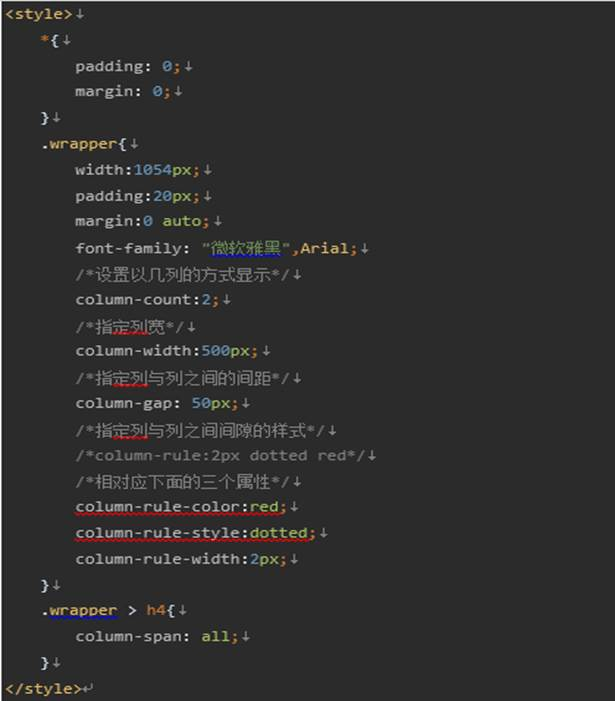
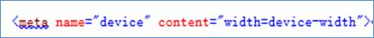
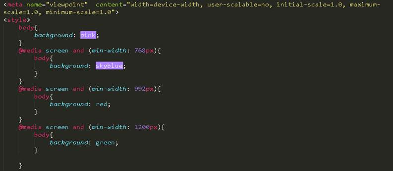
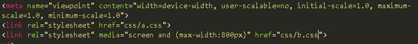

一、css3盒模型
css3增加了盒模型属性box-sizing，能够事先定义盒模型的尺寸解析方式。
box-sizing：content-box border-box inherit
content-box
元素的宽 =
width + padding + border
border-box
元素的宽 =
width（包含padding和border）
二、伸缩布局盒模型
css3引入一种新的布局模式――flexbox布局，即伸缩布局盒模型，用来提供一个更有效的方式制定、调整和分布一个容器里的项目布局，即使他们的大小是未知或者动态的。
只要思想是让容器有能力让其子项目能够改变其宽度、高度（甚至顺序），以最佳的方式填充可用空间（主要是为了适应所有类型的显示设备和屏幕大小）。flex容器会使子项目扩展来填充可用空间，或缩小他们以防止溢出容器。
flexbox布局功能主要具有以下几点：
1、屏幕和浏览器窗口大小发生变化也可以灵活调整布局；
2、指定伸缩项目沿着主轴或侧轴按比例分配额外空间，从而调增伸缩项目的大小；
3、指定伸缩项目沿着主轴或侧轴将伸缩容器额外空间，分配到伸缩项目之前、之后或之间；
4、指定如何将垂直于元素布局轴的额外空间分布到该元素的周围；
5、控制元素在页面上的布局方向；
6、按照不同于标准流所指定的排序方式对屏幕上的元素重新排序。
flexbox模型中的专业术语：
1、主轴和侧轴
2、主/侧轴、侧/侧轴方向
3、主/侧轴起点、主/侧轴终点
4、主/侧轴长度
5、伸缩容器和伸缩项目
弹性盒模型的使用：
声明伸缩容器（父元素）：display：flex；需要加前缀
display：-webkit-flex；
display：-moz-flex；
display：-ms-flex；
display：-o-flex；
display：flex；
伸缩项目（子元素）
-webkit-flex:1;
-moz-flex:1;
-ms-flex:1;
-o-flex:1;
flex:1;
伸缩容器属性：
1、伸缩流方向
flex-direction 主要用来创建主轴，定义伸缩项目在伸缩容器中的方向
row：从左向右
row-reverse：与row相反；
column：从上到下
column-reverse：与column相反；
2、伸缩换行
flex-wrap：
nowrap
不换行 默认值，不管超出还是不超出都不会换行
wrap
换行 一旦伸缩项目超出伸缩容器，那么就会换行
wrap-reverse
换行反向 主轴是水平时，上下反向，主轴垂直时，左右反向；
3、伸缩流方向与换行
flex-flow
flex-flow：flex-direction
|| flex-wrap
两个值同时定义或者单独定义都生效
4、主轴对齐
justify-content 主要用来定义伸缩项目沿主轴线的对齐方式；
flex-start：伸缩项目向一行的起始位置靠齐；
flex-end：伸缩项目向一行的结束位置靠齐；
center：伸缩项目向一行的中间位置靠齐；
space-between：伸缩项目会平均的分布在行里；
space-around：伸缩项目会平均的分布在行里，两端保留一半的空间；
5、侧轴对齐
align-items 伸缩项目行在侧轴上的对齐方式(单行)
flex-start：伸缩项目在侧轴起点边的外边距 紧靠住 该行在侧轴起始边；
flex-end：伸缩项目在侧轴终点边的外边距 紧靠住 该行在侧轴终点边；
center：伸缩项目的外边距盒 在该行的侧轴上居中放置；
baseline：伸缩项目根据伸缩项目的基线对齐；
stretch：伸缩项目拉伸填充整个伸缩容器。
6、堆栈伸缩行
align-content 定义多个伸缩行在侧轴方向上的对齐方式； 往往要与换行同时应用
flex-start：各行向伸缩容器的起点位置堆叠；
flex-end：各行向伸缩容器的结束位置堆叠；
center：各行向伸缩容器的中间位置堆叠；
space-between：各行在伸缩容器中平均分布；
space-around：各行在伸缩容器中平均分布，两端保留一半的空间；
stretch：各行将伸展以占用额外空间。
伸缩项目属性：
1、显示顺序 order 默认状态是按照标准流的顺序排列，在flexbox模型里，可以通过order改变伸缩项目的顺序。
不定义order的伸缩项目会排到前面
order：1； 排第一
order：2； 排第二
2、伸缩性flex
flex:2;
3、align-self：主要用来设置单独伸缩项目在侧轴的对齐方式，可以覆盖align-items。
三、多列布局
css3多列布局可以自动将内容按指定的列数排列，这种特性实现的效果和报纸、杂志类排版非常相似。
核心属性：
columns：column-width
列宽 column-count 列数
column-width：定义每列列宽； 类似于最小宽度min-width； auto 自适应；
column-count：定义分列列数；最多列数，auto自适应（由列宽、容器宽和列间距决定），也可固定
column-gap：定义列间距； 不能为负数；
column-rule：定义列边框；与定义边框一样：2px
dashed #ccc;
column-span：定义多列布局中子元素的跨列效果；通常用于标题；
none：不跨列；
all：跨所有列
四、媒体查询
许多智能手机都使用了一个比实际屏幕尺寸大很多的虚拟可视区域，主要目的就是让页面在智能手机端阅读时不会因为实际可视区域变形。所以你看到的页面还是普通样式，即一个全局缩小后的页面。为了让智能手机能根据媒体查询匹配对应样式，让页面在智能手机中正常显示，特意添加了一个meta标签。这个标签的主要作用就是让智能手机浏览页面时能进行优化，并且可以自定义界面可视区域的尺寸和缩放级别。
如何识别手机尺寸通过设置meta语句：
<meta name="viewport"
content="width=device-width,initial-scale=1,minimum-scale=1,maximum-scale=1,user-scalable=no"
/>
width
可视区域的宽度；
height
可视区域的高度；
device-width 设备屏幕分辨率的宽度值
initial-scale 初始的缩放比例（0-10.0），取值为1时页面按实际尺寸显示，无任何缩放
minimum-scale 允许用户缩放到的最小比例
maximum-scale 允许用户缩放到的最大比例
user-scalable 设定用户是否可以缩放（yes/no）
可以写成：
<meta name="viewport"
content="width=device-width,initial-scale=1.0" />
常见设备类型(media
type):
all 所有设备
screen 电脑显示器
print 打印用纸或打印预览视图
handheld 便携设备
tv 电视机类型的设备
speech 语意和音频盒成器
braille 盲人用点字法触觉回馈设备
embossed 盲文打印机
projection 各种投影设备
tty 使用固定密度字母栅格的媒介，比如电传打字机和终端
媒体类型引用方法：
1、link方式
<link rel="stylesheet"
href="css/wide.css" media="screen and (min-width:641px)"
/>
<link rel="stylesheet"
href="css/mobile.css" media="screen and (min-width:320px) and
(max-width:640px)" />
2、@import方式
<style>
@import url(style.css) screen and
(min-width:641px);
</style>
<style>
@import url(style.css) print /*print:打印预览视图*/
</style>
3、@media方式
1）在样式文件中引用媒体类型：
@media all and (min-width:600px)
and (max-width:800px) {
h1
{
background:
red;
}
}
2）写在内部样式中
<head>
<style
type="text/css">
@media
only screen and (min-width:600px) and (max-width:800px) {
h1
{
background:
red;
}
}
/*设备横向放置是*/
@media
(orientation: landscape) {
h1
{
background:
yellow;
}
}
</style>
</head>
Css3分栏布局
(一) 分栏布局属性：
column-width 栏目宽度
column-count 栏目列数
column-gap 栏目间距
column-rule 栏目间隔线样式（宽度、颜色）
column-span: 规定元素应横跨多少列(1:指定跨1列 all:跨所有列)

(二) 列宽度、高度的平衡：
（1） 如果没有设置栏宽或者设置的宽度小于默认平分的宽度，那么默认平分；
（2） 如果设置的宽度大于默认平分的宽度，则可能减少列的数量，依旧平分。
（3） 小于默认生成的高度，则会造成多列出现；
（4） 当设置高度大于默认生成的高度，则默认生成的高度不会被改变。
一、
Meta标签定义
(一)三种viewpoint视口
布局视口：以屏幕分辨率为基准，实际上布局视口的宽度要比屏幕宽出很多。
视觉视口：用户看到的网站展示区域，一般视觉视口和设备宽度一致。并且它的CSS像素的数量会随着用户缩放而改变。
理想视口：为了使网站在移动端有最理想的浏览和阅读宽度而设定。需要手动添写meta视口标签，一般视口大小都设置为设备大小。

(二) 设置移动端标准视口
快捷键：meta:vp
<meta name="viewport" content="width=device-width, user-scalable=no, initial-scale=1.0, maximum-scale=1.0, minimum-scale=1.0"/>
width 控制viewpoint的宽度，可以是固定值，也可以是device-width设备宽度
user-scalable:用户是否可以缩放
initial-scale 控制初始化缩放比例，1.0表示不可以缩放
maximum-scale 最大缩放比例
minimum-scale 最小缩放比例
（1）
二、
自适应与响应式
自适应：不同大小设备呈现同样的页面效果，只是文字、图片等的大小不一样，但是相对位置一样。例如：百分比布局、弹性盒布局flex、分栏布局。
响应式：同一页面在不同大小设备可能呈现不一样的页面效果，自适应布局+媒体查询即可实现。
三、
Css3响应式布局
媒体查询
1.
分界点：
超小屏幕xs （移动设备）768px以下
小屏设备sm
768px-992px
中等屏幕md
992px-1200px
宽屏设备lg 1200px以上
2.
语法：@media screen and （max-width：768px）
(1)若当前页面宽度大于min-width，则样式生效，所以媒体查询min-width应从小写到大;
(2)若当前页面宽度小于max-width，则样式生效，所以媒体查询max-width应从大写到小。
 (3)min/max-width指的是页面宽度;min/max-device-width指的是设备屏幕宽度
3.
通过媒体查询调用不同的样式

4.
案例：
使用媒体查询实现最简单的布局
5.
补充：
媒体类型：screen(屏幕) print（打印机）Handheld(手持设备)All(通用）
常用媒体查询参数：
Width|height----视口宽高
Device-width|device-height设备宽高
Orientation：检查设备处于横向
Landscape 横向 portrait 竖屏
四、
rem
1.根元素html的字体大小font-size代表1rem;
2.其他元素的属性若是rem为单位，则相当于html字体大小的多少倍。
3.响应式开发时，可以通过改变根元素的字体大小，从而改变其他元素属性的值。